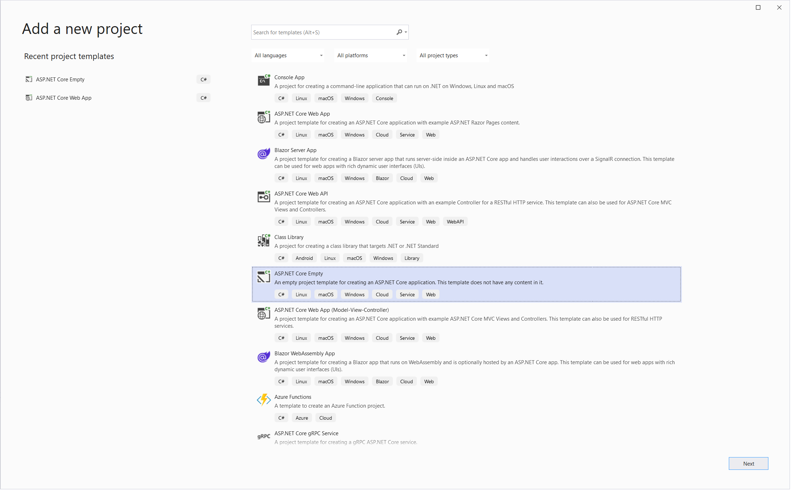

This walkthrough will run you through the basics of using AdminUI as a NuGet package.
Prerequisites
Before getting started you will need a AdminUI License Key which you can get from our products page.
Once you have a key, you will need to download the latest version of AdminUI from our downloads page.
You will also need an IdentityServer installation and either a MySql, SqlServer or PostgreSql database set up.
There is a sample IdentityServer available on our GitHub.
If you are going to be using the IdentityExpress.Identity schema, make sure your IdentityServer is already set up to do so. A guide on how to do this can be found here.
The above step is not necessary if you are going to be using a custom identity schema.
Basic Installation
Samples
A sample of the below steps can be found in our sample repo on GitHub
From Scratch
Watch this video installation guide or follow the written tutorial below.
When starting from scratch we recommend you create a project from the ASP.NET Core Empty template. This can be done through the Visual Studio GUI:

Or from the .NET CLI using dotnet new web with your parameters of your choice. More info can be found in the Microsoft Documentation
Get the AdminUI NuGet package
You can install the Rsk.AdminUI NuGet package using the .NET CLI (dotnet add package Rsk.AdminUI), Powershell (Install-Package Rsk.AdminUI), or your GUI of choice.
On first build the package will copy over the relevant static files into your wwwroot folder in a new admin folder e.g: wwwwroot/admin.
On run it will serve from this folder on the base path of the project (e.g http://localhost:5000/).
Configuration
AdminUI specific config
Please read our configuration page for more info
You can find sample configuration in our sample repo
- UI Url - The URL AdminUI is run on -AuthorityURL - The URL of your IdentityServer.
- IdentityConnectionString - The database connection string of your Identity database
- IdentityServerConnectionString - The database connection string of your IdentityServer database
- AdminUIClientSecret - A random secret value
- LicenseKey - The key you were provided with when you purchased the product or obtained a demo
Configure a Database & Migrations
AdminUI currently only supports MySql, PostgreSQL, SqlServer, and SqlExpress.
Any database must accept remote connections. Ensure that your firewall allows connections on any used ports.
Migrations will run on app start by default. To configure which migrations run or to turn off migrations completely you can use the options in AddAdminUI.
e.g:
builder.Services.AddAdminUI(options => {
options.MigrationOptions = MigrationOptions.None;
});
Using the package
Register AdminUI in your service collection, then add it to your application's pipeline.
using IdentityExpress.Manager.UI.Extensions;
var builder = WebApplication.CreateBuilder(args);
// Add services to the container.
builder.Services.AddAdminUI();
var app = builder.Build();
app.UseHttpsRedirection();
app.UseAdminUI();
app.Run();
Using NuGet Package with Custom Identity Store
The AdminUI NuGet package can be used as the foundations of a custom identity store. This will allow you to extend AdminUI's functionality around Users, Roles, and Claim Types.
Using NuGet Package with Custom Database Connections
In AdminUI 6.7 the AdminUI NuGet package uses a factory abstraction for creating database connections. You can replace the default implementation by providing a custom database connection factory. This will allow you to create connections according to your own needs.
Running migrations manually
AdminUI 6.7 adds the ability to programmatically run migrations manually. This can be done by turning off automatic migrations and using a new extension method thus:
var builder = WebApplication.CreateBuilder(args);
builder.Services
.AddAdminUI(
options =>
{
options.MigrationOptions = MigrationOptions.None;
}
);
var app = builder.Build();
app.RunMigrations(MigrationType.All);
This can be done with or without a custom connection factory.
The migration type is taken from the follwing enumeration:
public enum MigrationType
{
Unknown,
All,
IdentityServerOnly,
IdentityOnly,
AdminUI,
Configuration,
ExtendedConfiguration,
Operational,
Identity,
Audit,
Saml,
WsFed,
DataProtection
}
Excluding Packaged UI Files
If you have disabled the UI in AdminUI and wish to also not include the static web files in the the project you are using AdminUI in you can also configure the build to exclude them. This can be done with a build property in the .csproj file for you project. Here is an example to show how. If this setting is 'exclude' the static ui files are not included, else static ui files are included.
<PropertyGroup>
<DefaultUi>exclude</DefaultUi>
</PropertyGroup>